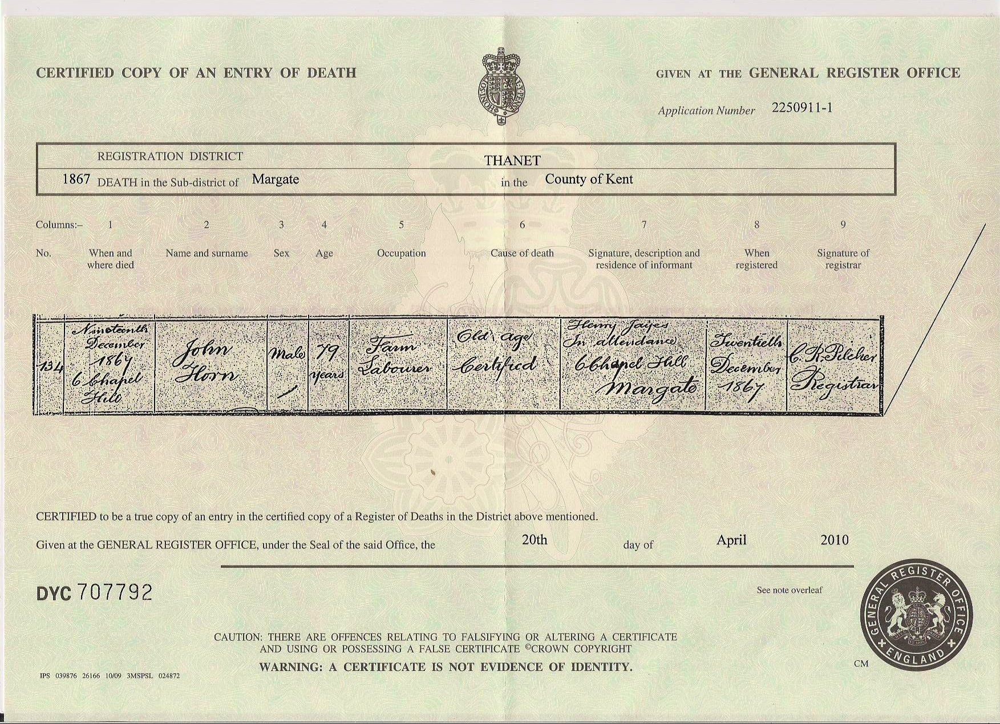

John Horn 1786 - 1867
[ Home ] | [ Calendar ] | [ Surnames Index ] | [ Family History ]A laborer and the youngest of 4 children of William Horn and Sarah Watton, John Horn, the 3 times great-grandfather of <a href="I1.html">Nigel Horne</a>, was born in Margate, Kent, England on Apr 10, 1786<span class="citation">1,2,3,4</span>, was baptized there at St John the Baptist's Church on Apr 30, 1786 andhad 11 children with Mary Ann: <a href="I158.html">Thomas</a>, <a href="I444.html">John</a>, <a href="I445.html">Mary Ann</a>, <a href="I446.html">Daniel</a>, <a href="I437.html">William</a>, <a href="I443.html">Elizabeth Emma</a>, <a href="I2736.html">Emma</a>, <a href="I436.html">Charles</a>, <a href="I442.html">James</a>, <a href="I441.html">Hannah</a> and <a href="I440.html">George</a>, along with 1 surviving child.</p><p>Throughout his life, he lived at Chapel Hill in Margate on Jun 6, 1841<span class="citation">7</span>; and at 6 Chapel Hill in Margate on Mar 30, 1851<span class="citation">8</span>. <p>He died on Dec 19, 1867 in Margate<span class="citation">2,4,5</span> (old age) and was buried there at St John the Baptist's Church on Dec 26, 1867<span class="citation">4,6</span>.
Parents
- Sarah was born on Feb 1, 1752
Children
- Thomas was born c. 1820
- John was born c. 1822
- Mary Ann was born c. 1822
- Daniel was born c. 1823
- William was born c. 1827
- Elizabeth Emma was born c. 1829
- Emma was born c. 1830
- Charles was born c. 1831
- James was born in 1833
- Hannah was born c. 1835
Citations
- 1851 England Census Online publication - Provo, UT, USA: The Generations Network, Inc., 2005.Original data - Census Returns of England and Wales, 1851. Kew, Surrey, England: The National Archives of the UK (TNA): Public Record Office (PRO), 1851. Data imaged from the National
- England & Wales, FreeBMD Death Index: 1837-1915 Online publication - Provo, UT, USA: The Generations Network, Inc., 2006.Original data - General Register Office. England and Wales Civil Registration Indexes. London, England: General Register Office. © Crown copyright. Published by permission of the Cont
- Kent, Canterbury Archdeaconry Baptisms - Findmypast
- Kent, Canterbury Archdeaconry Burials - Findmypast
- England & Wales deaths 1837-2007 - Findmypast
- Familysearch.org (<a href="http://www.familysearch.org/Eng/search/IGI/individual_record.asp?recid=100010036903&lds=1®ion=2&frompage=99">www.familysearch.org</a>)
- 1841 England, Wales & Scotland Census - Findmypast (was age 45 and the head of the household)
- 1851 England, Wales & Scotland Census - Findmypast (was age 60 and the head of the household)
Notes
This is NOT the John Horn who married Mary Ann Jarrett on 10/10/1819. That Mary Ann was alive and living with John Horn in 1851, whereas this John Horn is alone with his mother in a poor house in 1851.
Media
John Horn - death certificate

Canterbury Baptisms Transcription - GBPRS-CANT-B-96208897
Kent, Canterbury Archdeaconry burials - GBPRS/CANT/D/95009698
England & Wales deaths 1837-2007 - BMD/D/1867/4/AZ/000154/162
1851 England, Wales & Scotland Census - GBC/1851/0005885654
England Births & Baptisms 1538-1975 - R_883173848
Family Tree

Generated by Ged2Site. Last updated on Jul 20, 2025